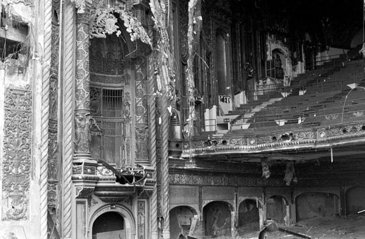

罕见地震袭击芝加哥
联合剧院区遭受严重破坏
CHICAGO — Early Sunday morning, a 5.8-magnitude earthquake struck the city, causing severe damage to the downtown area. The historic Union Theater District bore the brunt of the earthquake, with several early 20th-century buildings sustaining structural damage.
芝加哥——周日清晨，一场里氏5.8级的地震袭击了该市，造成市中心地区严重损毁。历史悠久的联合剧院区遭受了此次地震的最大冲击，多座20世纪初的建筑物遭受了结构性损坏。

Emergency services responded within hours, evacuating nearby hotels and closing key intersections. Reports confirmed at least 50 people suffered minor injuries, with widespread power outages in the South Side and West Side communities.
应急服务部门在数小时内作出响应，疏散了附近酒店并关闭了关键路口。报告确认至少有50人受轻伤，南环区和西区社区普遍出现停电情况。
Mayor Richard M. Daley praised the city's rapid response team and pledged federal support for the reconstruction of damaged landmarks. "Chicago has weathered storms before. We will rebuild, brick by brick."
市长理查德·M·戴利赞扬了城市的快速反应团队，并承诺将获得联邦支持以重建受损地标。"芝加哥以前也经历过风暴。我们将重建，一块砖头接一块砖头。"
TThe United Grand Theater, a architectural landmark, lost its iconic sign, and its interior ceiling collapsed. Engineers are concerned about potential structural safety hazards, which may require extensive repairs or complete closure.
作为建筑地标的联合大剧院（United Grand Theater）失去了其著名的招牌，内部天花板也发生坍塌。工程师担心该建筑可能存在结构安全隐患，可能需要进行大幅度维修或完全关闭。
Geologists located the earthquake's epicenter in southern Illinois, within the little-known Wabash Valley Seismic Zone. Due to tunnel inspections, multiple CTA lines experienced service disruptions for several hours.
地质学家将地震的震中定位在伊利诺伊州南部，属于鲜为人知的瓦巴什河谷地震带（Wabash Valley Seismic Zone）。由于隧道需要检查，多条CTA线路的交通中断了数小时。
While seismologists continue to analyze fault activity, the "cause" of the earthquake remains a subject of debate. Some residents near the theater claimed to have heard strange sounds from underground seconds before the earthquake—though each description varied. Other residents have compared this earthquake to the 1903 Iroquois Theatre fire, which also caused casualties several blocks away. A few conspiracy theorists believe the earthquake was a divine warning, even linking it to "unresolved matters" related to Chicago's dark history. This newspaper believes the disaster was simply a natural phenomenon, and such speculations are baseless.
尽管地震学家仍在分析断层活动，但出现地震的"原因"众说纷纭。部分大剧院附近的居民声称，地震发生前数秒曾听到了来自地下的奇怪声音——但每个人的形容都各不相同。另有居民将此次地震与1903年伊罗奎斯剧院火灾相提并论，后者同样在数个街区外造成人员伤亡。少数阴谋论者认为此次地震是神圣的警告，甚至与芝加哥黑暗历史相关的"未了之事"。本报认为本次灾害只是自然灾害，此类猜测为毫无根据。